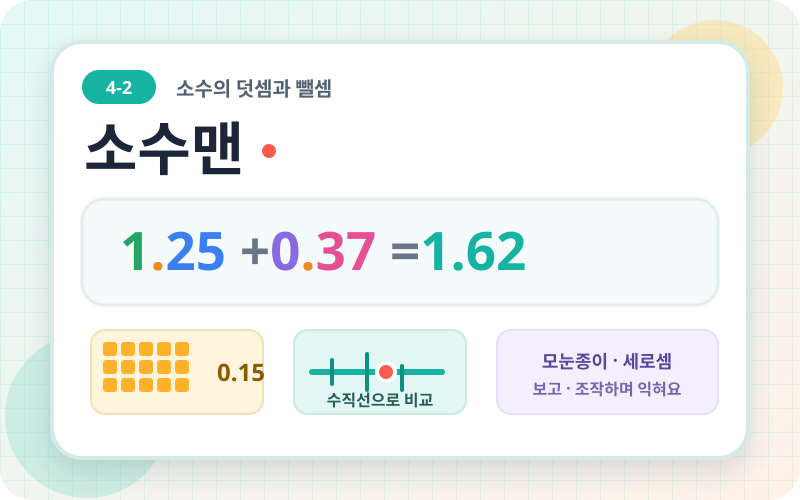
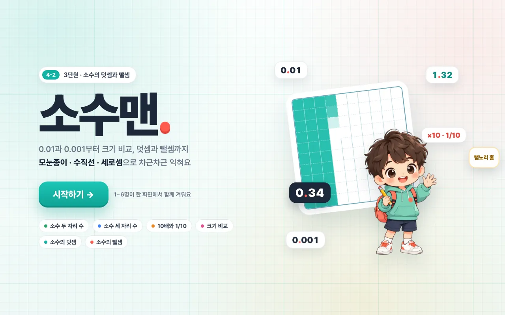
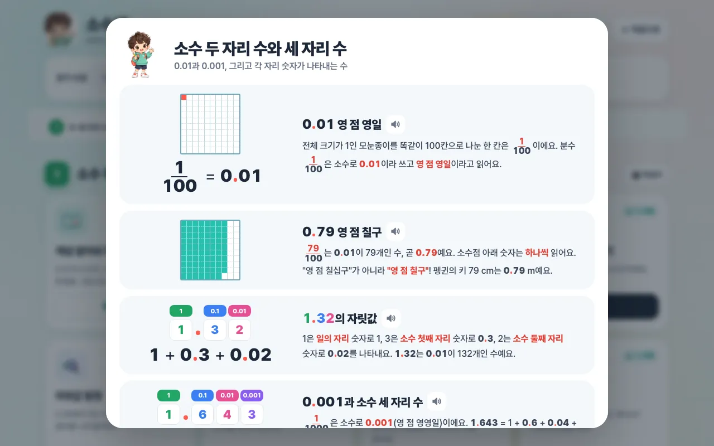
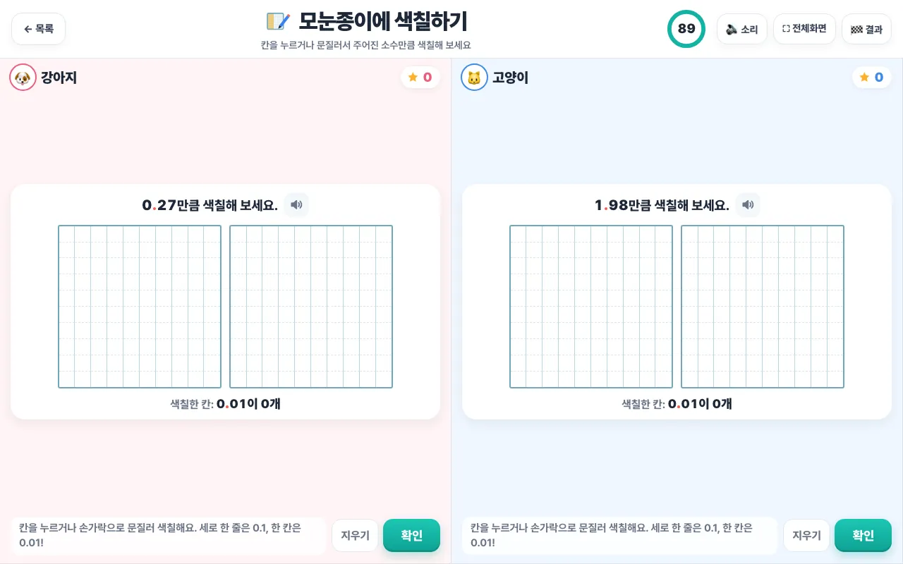
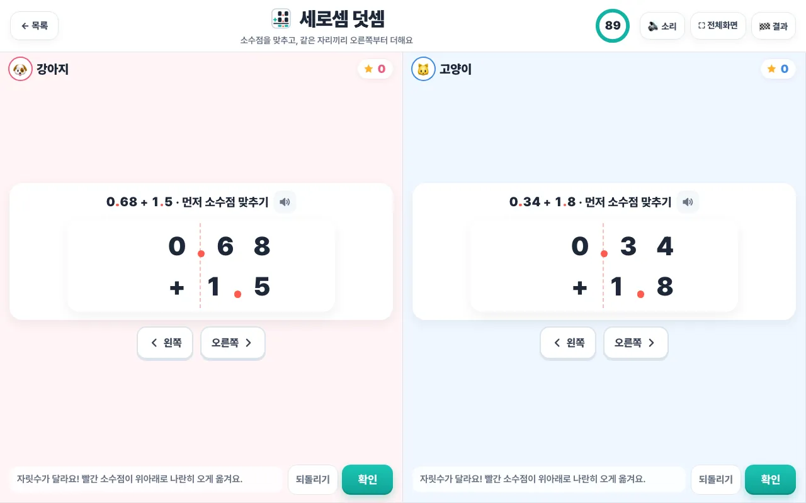
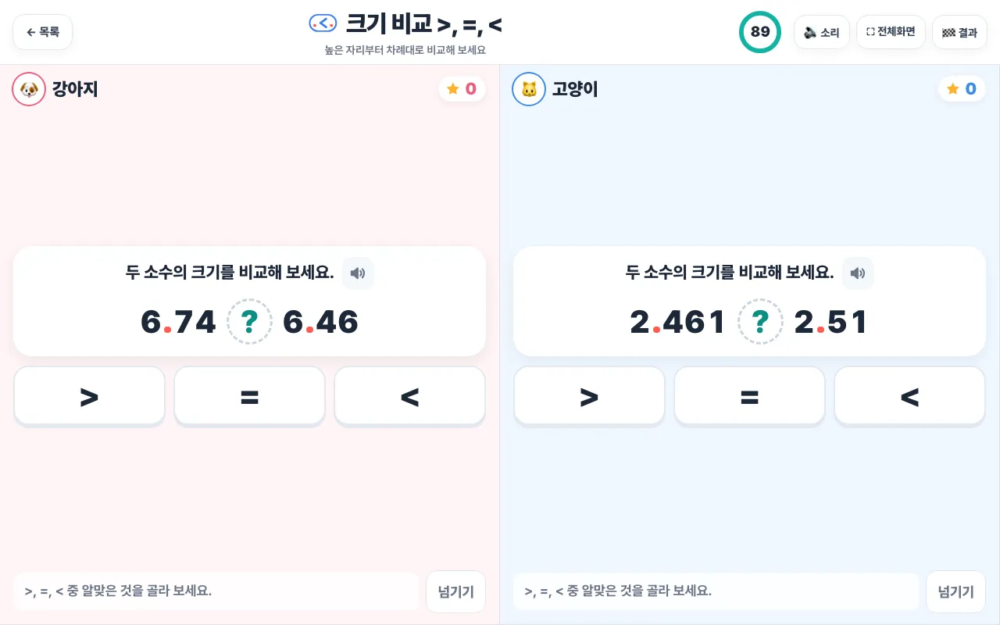
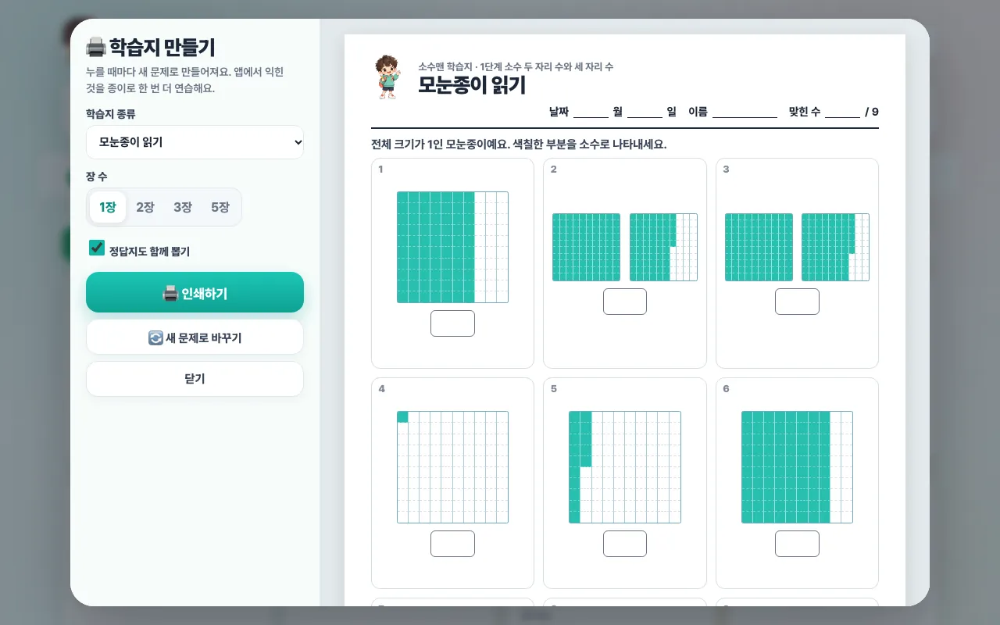
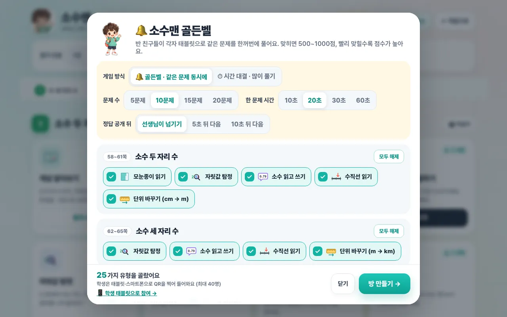

소수맨
소수 두·세 자리 수의 이해부터 크기 비교와 덧셈·뺄셈까지 익히고, 19종의 단계별 A4 학습지와 최대 40명이 함께하는 실시간 골든벨·시간 대결을 제공하는 전자칠판 수학 게임입니다.

업데이트 내역
2026.10.30 · 실시간 골든벨에 시간 대결 모드를 추가했습니다. 기존처럼 같은 문제를 함께 풀거나, 각자 문제를 풀어 제한 시간(1분·1분 30초·3분·5분) 안에 최대한 많은 문제에 도전할 수 있습니다. 시간 대결은 첫 시도 정답 2점, 다시 풀어 정답 1점이며 점수와 정답 수, 순위가 칠판에 실시간 표시됩니다. 색칠하기와 세로셈을 포함해 문제 유형을 골라 진행할 수 있습니다. 교사용 설정에서 학생 태블릿 참여 화면을 바로 열 수 있도록 참여 동선도 개선했습니다. 기존 골든벨은 최대 40명의 학생이 QR 또는 방 번호로 참여합니다.
2026.10.25 · 단계별 학습지 만들기를 추가했습니다. 모눈종이, 자릿값, 수직선, 크기 비교, 덧셈·뺄셈 등 19종 중에서 고르고 문제 범위와 장 수를 정해 새 문제를 만들 수 있습니다. 정답지를 함께 뽑거나 학습지를 인쇄해 복습에 활용하세요.
학습 내용
소수 둘째·셋째 자리의 의미와 소수의 읽고 쓰기를 살펴보고, 소수 사이의 관계와 크기 비교를 연습합니다. 모눈종이와 세로셈을 활용해 덧셈·뺄셈의 원리를 익히며 틀린 계산 찾기, 생활 속 문제, 단원 마무리 평가까지 진행할 수 있습니다.
사용 방법
전자칠판에서 소수맨을 열고 아래 순서대로 진행하면 됩니다. 활동은 1~6명이 한 화면을 나눠 함께 풀고, 골든벨은 학생들이 각자 태블릿으로 참여합니다.
1. 시작하기
첫 화면에서 ‘시작하기’를 누르면 활동 목록으로 이동합니다. 첫 화면 아래에는 이 단원에서 다루는 내용(소수 두·세 자리 수, 10배와 1/10, 크기 비교, 덧셈, 뺄셈)이 정리되어 있습니다.

2. 인원과 시간을 정하고 활동 고르기
- 참가 인원: 1~6명 중에서 고르면 화면이 인원 수만큼 나뉘고, 각자 자기 칸에서 문제를 풉니다.
- 제한 시간: 1분, 1분 30초, 3분, 5분, 무제한 중에서 고릅니다.
- 읽어 주기: 켜 두면 문제와 설명을 소리로 읽어 줍니다.
- 가운데의 차시 버튼(1 두·세 자리 수 ~ 6 실력 다지기)을 누르면 해당 차시로 바로 이동합니다. 차시마다 교과서·익힘책 쪽수가 함께 표시됩니다.
3. 개념 알아보기로 도입하기
차시마다 첫 카드인 ‘개념 알아보기’의 ‘펼쳐 보기’를 누르면 모눈종이, 자릿값 표 등으로 개념을 설명합니다. 🔊 버튼을 누르면 설명을 읽어 주고, 아래의 ‘문제 풀러 가기’를 누르면 바로 관련 활동이 시작됩니다.

4. 활동 풀기
활동 카드의 ‘시작’을 누르면 인원 수만큼 화면이 나뉘어 동시에 문제를 풉니다. 맞힐 때마다 별 점수가 올라가고, 제한 시간이 끝나거나 오른쪽 위 ‘🏁 결과’를 누르면 순위가 나옵니다. ‘⛶ 전체화면’으로 칠판을 넓게 쓰고, ‘← 목록’으로 활동 목록에 돌아갑니다.
- 모눈종이에 색칠하기: 칸을 누르거나 문질러 주어진 소수만큼 칠한 뒤 ‘확인’을 누릅니다. 세로 한 줄은 0.1, 한 칸은 0.01입니다.
- 세로셈 덧셈·뺄셈: ‘왼쪽/오른쪽’ 버튼으로 수를 옮겨 소수점을 먼저 맞추고, 같은 자리끼리 계산한 뒤 답에 소수점을 찍습니다. 뺄셈에서는 윗자리 숫자를 누르면 받아내림이 표시됩니다. 계산 과정이 길어 최대 4명까지 참여합니다.
- 크기 비교·수직선·자릿값 등: 보기 버튼 중에서 답을 고릅니다. 모르는 문제는 ‘넘기기’로 건너뜁니다.



5. 문제 모음으로 섞어 풀기
‘문제 모음’의 ‘유형 고르기’를 누르면 그 차시의 문제 유형을 체크해서 섞어 풀 수 있습니다. 6. 실력 다지기의 ‘단원 전체 문제 모음’에서는 모든 차시의 유형을 함께 섞을 수 있습니다. 단원을 마칠 때는 ‘단원 마무리 평가’로 20문제를 시간 제한 없이 한 번씩만 답하며 풀어 봅니다.
6. 학습지 만들기
상단의 ‘🖨 학습지 만들기’ 또는 차시 제목 옆의 ‘🖨 학습지’를 누릅니다. 19종의 학습지 종류 중에서 고르고 장 수(1·2·3·5장)를 정하면 오른쪽에 A4 미리보기가 나옵니다. ‘정답지도 함께 뽑기’를 체크하면 정답지가 함께 인쇄되고, ‘새 문제로 바꾸기’를 누르면 숫자가 새로 바뀝니다.

7. 골든벨·시간 대결
상단의 ‘🔔 골든벨’을 누르고 게임 방식을 고릅니다.
- 🔔 골든벨: 반 전체가 같은 문제를 동시에 풉니다. 문제 수(5~20문제), 한 문제 시간(10~60초), 정답 공개 방식(선생님이 넘기기, 5초·10초 뒤 자동으로 다음)을 정합니다. 맞히면 500~1000점을 받고, 빨리 맞힐수록 점수가 높습니다.
- ⏱ 시간 대결: 학생마다 각자 다른 문제를 제한 시간 안에 최대한 많이 풉니다. 처음에 맞히면 2점, 다시 풀어 맞히면 1점입니다.
- 출제할 문제 유형을 체크하고 ‘방 만들기’를 누르면 칠판에 QR과 방 번호가 나타납니다. 학생은 태블릿이나 스마트폰으로 QR을 찍거나 방 번호를 입력해 최대 40명까지 참여하고, 점수와 순위가 칠판에 실시간으로 표시됩니다.

수업 팁
- 도입에서 ‘개념 알아보기’를 함께 보고, 2~4명씩 나와서 활동으로 연습한 뒤, 마무리로 골든벨을 하면 한 차시를 자연스럽게 구성할 수 있습니다.
- 세로셈에서는 답보다 소수점을 맞추는 과정과 받아올림·받아내림의 이유를 함께 이야기해 보세요.
- 활동에서 어려워한 유형은 같은 종류의 학습지로 뽑아 복습이나 과제로 활용할 수 있습니다.